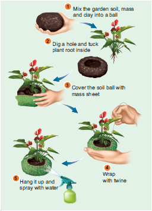
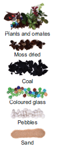
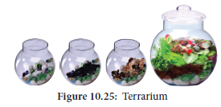
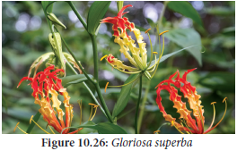
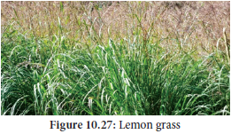

![Preparation oforgainc pesticide picture is given in 7 steps with pictures. 1. Mix 120g of hot chillies with 110 g of garlic or onion. Chop them thoroughly one. Organic Pesticide. 2. Blend the vegetables together manually or using an electric grinder until it forms a thick paste. 3. Add the vegetable paste to 500 ml of warm water. Give the ingredients a stir to thoroughly mix them together. 4. Pour the solution into a glass container and leave it undisturbed for 24 hours. If possible, keep the container in a sunny location. If not, at least keep the mixture in a warm place. 5. Strain the mixture. Pour the solution through a strainer, remove the vegetables and collect the vegetable-infused water and pour into another container. This f iltrate is the pesticide. Either discard the vegetables or use it as a compost. 6. Pour the pesticide into a squirt bottle. Make sure that the spray bottle has first been cleaned with warm water and soap to get rid it of any potential contaminants. Use a funnel to transfer the liquid into the squirt bottle and replace the nozzle 7. Spray your plants with the pesticide. Treat the infected plants every 4 to 5 days with the solution. After 3 or 4 treatments, the pest will be eliminated. If the area is thoroughly covered with the solution, this pesticide should keep bugs away for the rest of the season. Avoid spraying the plants during the sunny times of the day since it could burn plants. Many other plants possess insect repellent or insecticidal properties. Combinations of these plants can be fermented and used as biopesticide.](images/image335.png)
Seaweed is rich in trace elements and potassium, which makes it ideal to add to compost in its raw state, to work in as a mulch, or to create a liquid fertilizer. This is easy to do. Seaweed fertilizer releases about 60 nutrients from which plants can benefit.
Liquid seaweed extract enhances healthy growth of plants, flowers and vegetables. Regular use will help plants to withstand environmental stress, pests and disease attack. It can be used as a foliar spray for fruit, flower, vegetable crops as well as for shrubs and trees. It stimulates healthy growth for all plants.
Organic farming is an alternative agricultural system in which plants/crops are cultivated in natural ways by using biological inputs to maintain soil fertility and ecological balance thereby minimizing pollution and wastage. Indians were organic farmers by default until the green revolution came into practice.
Use of biofertilizers is one of the important components of integrated organic farm management, as they are cost effective and renewable source of plant nutrients to supplement the chemical fertilizers for sustainable agriculture. Several microorganisms and their association with crop plants are being exploited in the production of biofertilizers. Organic farming is thus considered as the movement directed towards the philosophy of Back to Nature.
Pest like aphids, spider and mites can cause serious damage to flowers, fruits, and vegetables. These creatures attack the garden in swarms, and drain the life of the crop and often invite disease in the process. Many chemical pesticides prove unsafe for human and the environment. It turns fruits and vegetables unsafe for consumption. Thankfully, there are many homemade, organic options to turn to war against pests.
Preparation of Organic Pesticide
Refer figure: 10.24
II. Bio-pest repellent
Botanical pest repellent and insecticide made with the dried leaves of Azadirachta indica
Preparation of Bio-pest repellent
Box item:Activity
Hanging Garden

Can portable miniature indoor greenery be commercially sold?
A terrarium is a collection of small plants growing in a transparent, sealed container. Terrariums are easy to make, low maintenance gardens, and it can survie indefinitely with minimal water.
How to make a terrarium?
Prepare the Container: Collect whatever interesting glassware you have or source your container from a store and clean it thoroughly. Plan how to arrange the plants inside the glassware.
Add Drainage Layers:
To create a false drainage layer, fill the bottom with pebbles so that water can settle and does not flood. The depth of the pebbles depends on the size of the container.
Add the Activated Charcoal:
Cover the pebbles with charcoal to improve the quality of the terraria by reducing bacteria, fungi and odors.
Add Soil:
Add enough soil so that the plant roots will have enough space to f it and grow. Plants and ornates Moss dried Coal Coloured glass Pebbles Sand

Plant:
Select the desired plant such as, Caralluma species, Asperagus species, Portulaca species, Begonia species, and Chlorophytum species trim the roots if they are too long. Dig a pit using a stick, and place the plants’ roots in it. Add more soil around the top and compact the soil down around the base of the plant. Place little plants in the container and try to keep them away from the edges of the container, so that the leaves do not touch the sides. After planting add accessories like a layer of moss (dried or living), little figurines (old toys, glass beads, stones) or a layer of miniature rocks. This is the little green world
Cleaning and Watering:
Wipe if there is any dirt along the sides of the container. Give the terrarium a little bit of water and enjoy the beautiful miniature living world on your table or in your living room. Readymade terrariums can fetch a good price as indoor garden objects or as gift articles.

![A large picture showing the methods of bonsai trees and right to the image it has got different bonsai plants. Bonsai is a Japanese art form using miniature trees grown in containers that mimic the shape and scale of full size trees. How do you make a Bonsai tree? Visualize the finished product of bonsai while selecting a plant species and the pot. Plug out the sapling and clean and prune the roots. Prepare the pot and position the tree in it. After re-potting leave the plant in a semi shaded area until the roots have re-established. OMMON BONSAI STYLES - Formal Upright , Informal upright , Broom style, Slant, Formal Upright Informal upright Broom style Broom style Slant Cascade - overflowing. potential of growth, Semi Cascade.](images/image252.png)
Globalization has brought opportunities and challenges in all business sectors. Government of India has identified medicinal and aromatic plants as one of the sectors that can make India a global leader in the 21st century owing to the treasure of about 8,000 medicinal and 2,500 aromatic plants that can provide large number of consumer products with national and international demand. Medicinal plants synthesize a number of secondary metabolites with pharmacological properties through secondary metabolism. The chemicals isolated from medicinal plants are used in traditional and biomedicine systems to treat diseases of both humans and animals. But most of the medicinal and aromatic plants are still wild collecting.
Central Institute of Medicinal and Aromatic Plants (CIMAP) has developed a number of high yielding varieties and processing technologies to promote cultivation of medicinal and aromatic plants. Profitable cultivation of medicinal plants can be practiced by the entrepreneurs along with traditional agriculture horticulture crops. They can be profitably intercropped in plantations. Cultivation of medicinal/aromatic plants offers following advantages:
one. Cultivation of Medicinal Plant - Gloriosa superba
Economically useful part – Seed, Rhizome.
Major constituents - Colchicine (0.5-0.7%) and Colchicoside
Uses - Cures gout, anti-inflammatory,
Box item:
National Medicinal Plants Board (NMPB)
Government of India has set up National Medicinal Plants Board (NMPB) on 24th November 2000. Currently this board is working under AYUSH Government of India. Developing an apt mechanism for coordination of various ministries and implementation of policies for overall growth of medicinal plant sector both at central (slash) state and international level is the primary mandate of NMPB. It focusses on in-situ and ex-situ conservation and enhancing local medicinal plants and aromatic species of medicinal significance to meet the growing demand.

Soil and Climate:
Red loamy soils are well suited for cultivation. Glory lily is cultivated in Tamil Nadu mainly in the parts of Tirupur, Dindigul, Karur and Salem districts covering an area of 2000 hectare.
Planting:
Planting is distributed from June – July. Plough the field 2 -3 times and add 10 tons of Farmyard Manure during last ploughing. Trenches of 30 cm depth are formed and tubers are planted at 30 – 45 cm spacing. The vines are trained over support.
Irrigation:
Irrigation should be given immediately after planting. Subsequent irrigation is given at 5 days intervals of time.
Harvest: Pods are harvested at 160 – 180 days.
Box item:
CSIR Aroma Mission of India
The Council of Scientific and Industrial Research (CSIR) has Catalyzing Rural Empowerment through Cultivation, Processing, Value Addition and Marketing of Aromatic Plants”. This program has contributed significantly in the development, nurturing and positioning of essential oil-based aroma industry in the country. This has led to creation of an ecosystem benefitting the industry, farmers and next generation entrepreneurs. The activities are pursued in a synergistic mode with the organization in public and private set ups. This program has also paved way for developing entrepreneurship in different parts of the country through cultivation and commercial utilization of aromatic crops.
II. Cultivation of Aromatic plant - Cymbopogon citratus(Lemongrass)
Lemongrass is a tropical herb packed with strong citrus flavor. The lemon taste is prized in Asian cooking, as well as in tea, sauces, and soups.
Economic part: Stem base and leaves.
Major constituents: Citronella, geraniol and citronellol.

Uses:
The aromatic oil has flavouring properties and is used in perfumery, cosmetics, confectionary, beverages, mosquito repellents and toilet cleaners. Soil and Climate: Lemongrass grow well in full sun, with plenty of water, in a rich, welldraining soil.
Planting: This plant can thrive well all through the year. Fill planting holes with composted manure to improve fertility and enhance the soil’s ability to hold water. If you’re adding several lemongrass plants to planting beds, space plants 60 cm apart.
Irrigation: Water requirements for this plant will vary dependent upon the type of soil they grow. Sandy, loose soils require more frequent watering than silty loam.
Harvest: Start harvesting as soon as plants are 30 cm tall and stem bases are at least 1.5 cm thick. Cut stalks at ground level.
Early civilization in different parts of the world has domesticated different species of plants for various purposes. Based on their utility, the economically useful plants are classified into food plants, fodder plants, fibre plants, timber plants, medicinal plants, and plants used in paper industries, dyes and cosmetics.
However, food base of majority of the population depends on very few Cereals, Millets, Pulses, Vegetables, Fruits, Nuts, Sugars, Oil seeds, Beverages, Spices and Condiments.
Oils can be classified into two types namely, essential oils and vegetable oils. Fatty acids in oil may be saturated or unsaturated. The oil yielding plants are groundnut, sesame, sunflower, coconut and mustard. The oils are used in cooking, making soaps and other purposes. Beverages contain alkaloids that stimulate central nervous system. Non-alcoholic beverages are coffee, tea and cocoa. Spices were used throughout the world for several years. Cardamom is ‘Queen of Spices’ used for flavouring confectionaries and beverages. Black pepper is King of Spices.
Botanically a fibre is a long, narrow, thick-walled cell. It is classified based on uses: textile fibres, brush fibres, plaiting fibres and filling fibres. Cotton, Jute and Coconut are fibre yielding plants. Teak, Rosewood, and Ebony are woods used for making furniture. Rubber is produced from the latex of Hevea brasiliensis. Paper production is a Chinese invention. Dyes have been used since ancient times. Indigo was extracted from the leaves of Indigofera. The orange dye henna is from the leaves of Lawsonia. Cosmetics have a high commercial value and have become chemical based industrial products. Perfumes are volatile and aromatic in nature, manufactured from essential oils which are found at different parts of the plant. Medicinal plants serve as therapeutic agents. Medicinally useful molecules obtained from these plants are marketed as drugs are called Biomedicines. Whereas phytochemicals from some of the plants which alter an individual’s perceptions of mind by producing hallucination are known as psychoactive drugs. Thus, plantsplay a vital role in the lives of people throughout the world.
Entrepreneurial Botany is the study of how new businesses are created using plant resources as well as the actual process of starting a new business. Mushrooms are the fruiting body of edible fungi and is the most priced commodity among vegetables.
Single-cell proteins are the dried cells of microorganism, which are used as protein supplement in human foods or animal feeds. Microorganisms like algae, fungi, yeast and bacteria are used for this purpose.
A terrarium is a collection of small plants growing in a transparent, sealed container. Bonsai is the art and science of dwarfing and shaping of a tree. Specialty materials like essential oils and pharmaceuticals, are obtained from plants. Many species of medicinal and aromatic plants (MAPs) are cultivated for such industrial uses, but most are still wild collected.